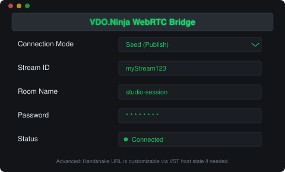

Audio-first by design
Requests audio transport only — video tracks are ignored inside the VST workflow for minimal overhead.
Audio-only WebRTC VST3
Stream or monitor live audio directly from your DAW with no local server setup. Purpose-built for low-friction remote collaboration workflows.

Requests audio transport only — video tracks are ignored inside the VST workflow for minimal overhead.
Seed publishes your DAW audio to VDO.Ninja. Play monitors one or more remote streams inside your session.
Receives and decodes audio from multiple peers in a room simultaneously, each with its own Opus decoder, then mixes into stereo output.
High-quality Opus encoding and decoding at 48 kHz with stereo support and automatic sample rate conversion.
Password-based AES encryption for signaling messages, compatible with VDO.Ninja's E2EE protocol.
Join VDO.Ninja rooms with automatic peer discovery, hashed room IDs, and password-protected access.
1
Download the latest Windows installer (*-windows-setup.exe) from the release assets below. Use the .zip only for manual install.
2
Load the plugin on a track in your DAW (REAPER, Studio One, or any VST3 host).
3
Set mode to Seed to publish audio, or Play to receive a remote stream. Enter a Stream ID and optionally a Room and Password.
Windows (x64), Linux (x64)
VST3
REAPER, Studio One
44.1 / 48 / 88.2 / 96 kHz (auto resampled)
CI builds are attached to GitHub Releases automatically on version tags.
Loading release assets...
This project follows AGPLv3 licensing and a contributor assignment policy aligned with VDO.Ninja.